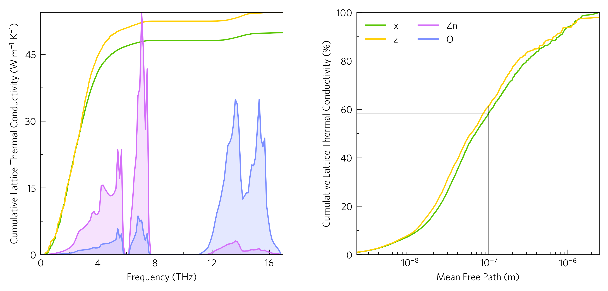

Gallery¶
Hint
Click on the images to see the script which generated them.
At its simplest, ThermoPlotter is a way to quickly plot useful data
from either a python script or the command line.
Click on the plot to see the script, or one could use
tp-ztmap boltztrap.hdf5 -k kappa-m<xxx>.hdf5 -c #800080 -d x
A related plot we hope people find useful is the kappa-target plot, which calculates the lattice thermal conductivity required to reach a ZT, in this case 2.

tp-kappa-target boltztrap.hdf5 -c #008080 -d x
Slightly more complex plots also with command line scripts are the phonon dispersions:

tp-converge-phonons <list of band.yamls> -l 111 222 333 444 555 -t Supercell\ Size
tp-phonons band.yaml -c #ff8000 -d projected_dos.dat --doscolour #ffff00 #00ffff
This is where some of the more useful functions of ThermoPlotter
come in, e.g. the rescaling of the x axis in the former plot, and the
simplicity of compund plots in the latter.
There are other command-line scripts, but the main functionality is intended as a python package, which enables much more customisable plotting, to enable nicely formatted multi-axes plots
and ones where multiple plots are on the same axes, to highlight particular interactions.

As well as projecting third-order phonon properties onto each other as above, so below we see there are also a number of functions for projecting these properties onto phonon dispersions. The former is an oft plotted widening of the bands due to scattering,1 and the latter shows the same data, but in a more quantitative way.

tp-wideband band.yaml kappa-m<xxx>.hdf5 -c #000000 #ff0000 -s dark_background
Through the python interface it is also possible to use individual parts of the code in ones own packages, for example the custom colourmaps, outside the scope of the package at large.
Reference¶
@article{Maradudin1962,
title={Scattering of neutrons by an anharmonic crystal},
author={Maradudin, AA and Fein, AE},
journal={Physical Review},
volume={128},
number={6},
pages={2589},
year={1962},
publisher={APS}
}